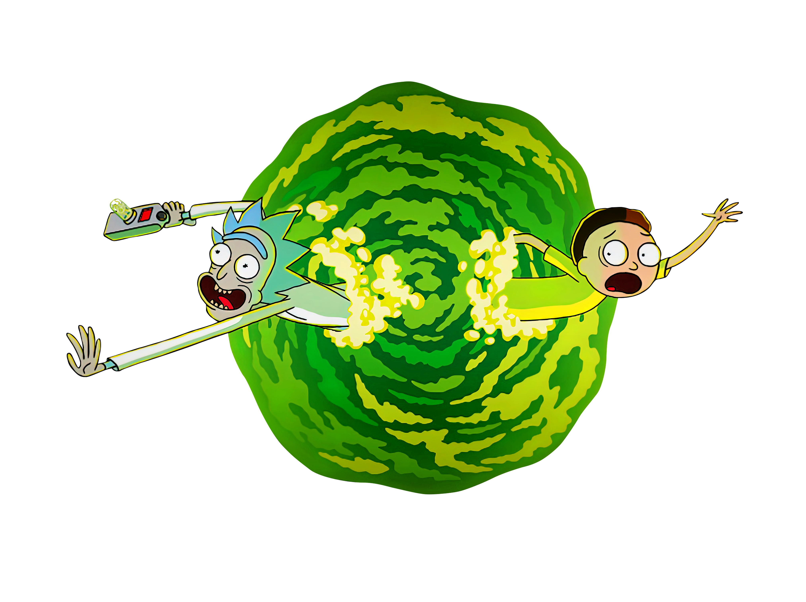

Bienvenidos al Mundo
de Rick y Morty
Rick and Morty, es una serie de televisión Americana de animación para adultos creada por Justin Roiland y Dan Harmon, la serie sigue las desventuras de un científico, Rick Sanchez, y su fácilmente influenciable nieto, Morty, quienes pasan el tiempo entre la vida doméstica y los viajes espaciales, temporales e intergalácticos. En esta página conoceras un poco más sobre su personajes y el rol que tiene cada uno dentro de la serie.
Conoce a los Personajes
